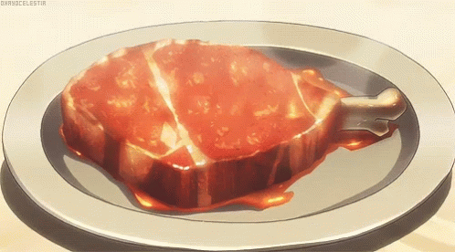

Grilled Tri-Tip-beef

description
This grilled tri-tip recipe with a tasty dry rub tastes gourmet but is actually very easy to make. It's a perfect dinner for guests. It is sure to impress!
Ingredients- 4 pounds tri-tip roast
- 4 cloves garlic, peeled and very thinly sliced
- ⅓ cup salt
- ⅓ cup black pepper
- ⅓ cup garlic salt or to taste
- CUsing a sharp knife, cut small slits in the top of the roast; insert garlic slices into the slits.
- Mix salt, pepper, and garlic salt together in a small bowl; rub all over the tri-tip and refrigerate for at least 1 hour or up to 1 day. Remove tri-tip from the refrigerator about 20 minutes before grilling.
- Preheat an outdoor grill for high heat and lightly oil the grate.
- Place the meat directly above the flame to sear the meat and lock in the juices, about 5 to 10 minutes per side.
- STurn the grill down to medium heat and continue to cook, turning occasionally, for another 25 to 30 minutes. An instant-read thermometer inserted into the center should read 145 degrees F (63 degrees C) for medium-rare. Let stand, covered loosely with aluminum foil, for 5 minutes before slicing.
:max_bytes(150000):strip_icc():format(webp)/139269-GrilledTriTip-ddmfs-Step4-0951-b64ab5327b0b481eb54981da65806ca3.jpg)